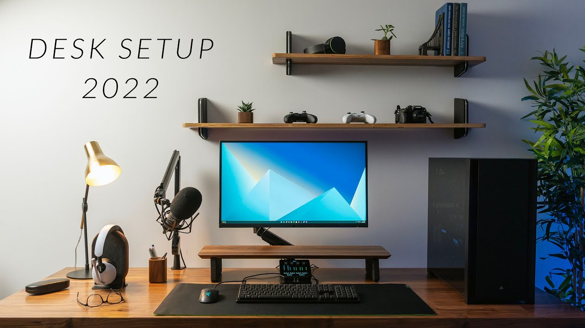
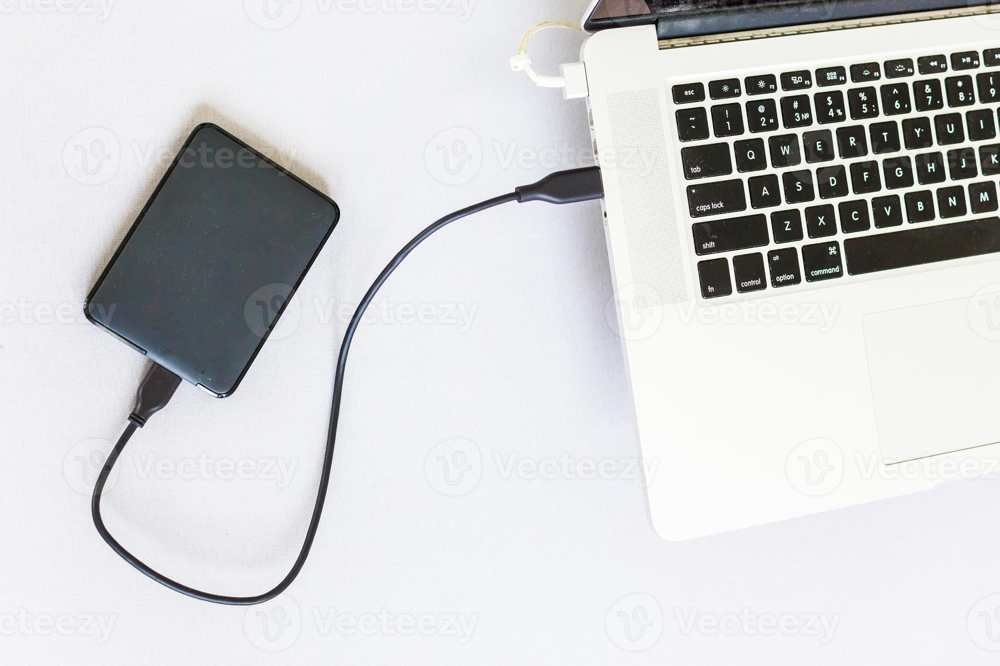
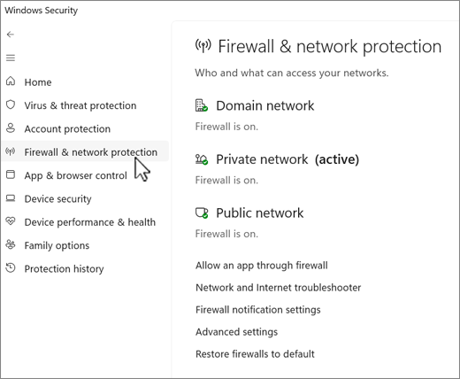

Proteger tu Computadoras de Escritorio

Manual de Seguridad Avanzada
Computadoras:
El Fuerte Digital
Proteja sus archivos familiares del secuestro de datos (Ransomware).
La Puerta Trasera del Escritorio
Al estar siempre encendidas y conectadas, son el blanco principal para:
- Ransomware: Virus que bloquean sus fotos y piden dinero.
- Botnets: Uso de su equipo para atacar a otros sin que sepa.
- Fuga de datos: Robo de claves guardadas en el navegador.

Paso 1: Estrategia de Respaldo 3-2-1

"Si un virus infecta su PC, el disco duro USB debe estar desconectado para que no se infecte también."
- 3 Copias de sus datos.
- 2 Medios diferentes (Disco duro USB y Nube).
- 1 Copia fuera de casa (Físicamente en otro lugar).
Paso 2: Firewall y Protección
- Firewall: Verifique que "Protección de red" esté en verde en Ajustes > Seguridad.
- Cuenta Estándar: No navegue como "Administrador". Use una cuenta estándar para limitar permisos de virus.
- Antivirus: Examen completo del sistema cada domingo.
